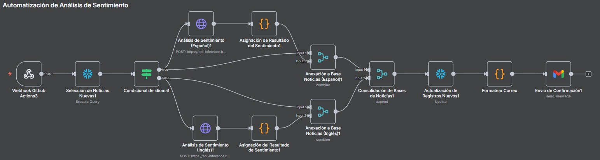

Modelos Predictivos
Modelos de análisis de sentimiento
Se ha decidido utilizar dos modelos predictivo en el cual los dos se utilozaron para predecir la probabilidad de que un titular sea negativo, positivo o neutral. los dos modelos son bert-base-multilingual-uncased-sentiment[multilingual] y distilroberta-finetuned-financial-news-sentiment-analysis [inglés]. Estos dos modelos fueron seleccionados por su rendimiento en clasificación de sentimientos y por su cobertura en distintos idiomas. Dado que las fuentes analizadas incluyen tanto medios en inglés como en español, se ha considerado necesario emplear modelos específicos para cada idioma con el fin de maximizar la precisión de los resultados.
Modelo en inglés: mrm8488/distilroberta-finetuned-financial-news-sentiment-analysis
Este modelo corresponde a una versión ajustada de DistilRoBERTa-base, entrenada específicamente en el conjunto de datos Financial PhraseBank, que contiene 4.840 frases procedentes de noticias financieras en inglés. Dicho corpus fue anotado por entre 5 y 8 expertos, categorizando cada enunciado según su polaridad de sentimiento (positivo, negativo o neutral).
A nivel arquitectónico, DistilRoBERTa es una versión comprimida de RoBERTa-base que conserva su rendimiento con menor complejidad computacional. Consta de 6 capas, 768 dimensiones y 12 cabezales de atención, sumando un total aproximado de 82 millones de parámetros (frente a los 125 millones de RoBERTa-base). Esta reducción permite que el modelo sea, en promedio, el doble de rápido en comparación con RoBERTa-base, manteniendo un desempeño competitivo.
En cuanto a resultados, el modelo alcanzó un accuracy del 98,23 % y una pérdida de validación de 0,1116 en el conjunto de evaluación, lo que demuestra un desempeño sobresaliente en la clasificación de sentimiento en el ámbito financiero.
La principal ventaja de este modelo es su alta especialización en finanzas, lo que le permite detectar matices en titulares y frases económicas con gran precisión. No obstante, presenta la limitación de estar restringido exclusivamente al inglés.
https://huggingface.co/mrm8488/distilroberta-finetuned-financial-news-sentiment-analysis
Modelo en español (multilingüe): nlptown/bert-base-multilingual-uncased-sentiment
Este modelo se basa en BERT multilingüe uncased y ha sido afinado para realizar análisis de sentimiento en reseñas de productos en seis idiomas: inglés, neerlandés, alemán, francés, español e italiano. La principal característica de este modelo es que clasifica el sentimiento en una escala de 1 a 5 estrellas, en lugar de limitarse a categorías binarias (positivo/negativo) o ternarias (positivo/neutral/negativo). Esto le otorga mayor capacidad para capturar matices y gradaciones en la opinión expresada en los textos.
A nivel técnico, el modelo cuenta con aproximadamente 167 millones de parámetros y conserva la arquitectura original de BERT multilingüe uncased, lo que significa que no diferencia entre mayúsculas y minúsculas durante el procesamiento. Fue entrenado sobre un corpus de más de 600 000 reseñas multilingües, de las cuales 50 000 corresponden al español, garantizando un desempeño razonable en este idioma.
En cuanto a métricas, el modelo presenta un rendimiento en español de alrededor de 58 % de exactitud en la predicción exacta del número de estrellas, y una precisión de 95 % cuando se permite un margen de ±1 estrella. Este último dato refleja que, aunque puede fallar en la predicción exacta de la escala, en la gran mayoría de los casos logra capturar correctamente la orientación del sentimiento (positivo, negativo o intermedio).
La ventaja principal de este modelo es su cobertura multilingüe, lo que permite procesar textos en diferentes idiomas sin necesidad de entrenar modelos independientes para cada caso. Además, la clasificación en una escala de cinco puntos ofrece un análisis más granular y rico en matices, especialmente útil para contextos con opiniones diversas o polarización moderada.
Sin embargo, el modelo también presenta limitaciones importantes. En primer lugar, no fue diseñado ni ajustado específicamente para el dominio financiero, lo que puede reducir su capacidad de interpretar correctamente frases técnicas o jergas económicas. En segundo lugar, la precisión exacta en español se sitúa por debajo de otros idiomas como el inglés o el alemán, aunque esta limitación se mitiga al considerar la métrica off-by-1.
En el contexto de este trabajo, el modelo ha sido utilizado principalmente como una herramienta complementaria para el análisis de textos en español. Si bien su desempeño no alcanza la especialización del modelo en inglés, su flexibilidad multilingüe y su buena capacidad de aproximación al sentimiento general lo convierten en una opción adecuada para garantizar cobertura en medios hispanohablantes.
https://huggingface.co/nlptown/bert-base-multilingual-uncased-sentiment
Comparación y justificación de uso
La principal diferencia entre ambos modelos radica en su especialización. El modelo en inglés ofrece un mejor desempeño en el contexto financiero gracias a su ajuste en noticias económicas, mientras que el modelo en español, aunque más generalista, permite cubrir de manera efectiva los textos en este idioma. En conjunto, la combinación de ambos modelos garantiza un análisis más robusto y equilibrado de noticias financieras procedentes de distintas fuentes y en diferentes idiomas.
Tabla comparativa de modelos
Modelo |
Idioma(s) |
Ventajas |
Limitaciones |
|---|---|---|---|
mrm8488/distilroberta-finetuned-financial-news-sentiment-analysis |
Inglés |
Especializado en noticias financieras, mayor precisión en este dominio. |
Solo aplica a textos en inglés. |
nlptown/bert-base-multilingual-uncased-sentiment |
Multilingüe (incluye español) |
Cobertura en más de 100 idiomas, adecuado para análisis en español. |
No especializado en finanzas, menor precisión contextual. |
Automatización del flujo de trabajo con n8n
En la automatización de la ingesta y el procesamiento de datos se ha empleado n8n, una herramienta de workflow automation de código abierto. Su función principal es permitir la integración entre múltiples servicios, APIs y bases de datos mediante la creación de flujos de trabajo visuales que se ejecutan de manera automática en función de determinados eventos o programaciones. A partir del trigger que en nuestro caso de de tiempo (00:00 todos los dias), los nodos se van ejecutando en orden lógico, permitiendo que la información fluya automáticamente entre servicios sin intervención manual.
En conjunto, n8n se convierte en un componente clave para la orquestación de datos en este proyecto, permitiendo que el análisis de sentimiento y financiero se sustente en información

Flujo de utilizacion de los modelos
Dentro del datalake definido en el módulo de Datos y Preparación, se encuentra la tabla unificada denominada TODOS_TITULARES. A partir de esta base de datos se extraen los titulares procedentes de los distintos noticieros. Posteriormente, mediante un árbol de decisión se determina el idioma de cada titular (inglés o español). Según el resultado, se aplica el modelo de predicción correspondiente, previamente entrenado para el análisis de sentimiento en cada idioma.
CODIFO DE MARCO PERU
Generacion de las columnas con tipo de titulos
Una vez aplicados los modelos de análisis de sentimiento, se generan cuatro variables principales: SENTIMIENTO_RESULTADO, PROBABILIDAD_POSITIVO, PROBABILIDAD_NEGATIVA y PROBABILIDAD_NEUTRAL. Estas variables permiten determinar de manera objetiva la clasificación final del texto en función de su polaridad. Posteriormente, los resultados se incorporan a la tabla principal de Noticias_Analizadas y se almacenan nuevamente en Snowflake, lo que garantiza su disponibilidad para futuros análisis, tanto de carácter técnico como de integración con otros indicadores financieros.
FECHA |
TITULAR |
FUENTE |
SENTIMIENTO_RESULTADO |
PROBABILIDAD_POSITIVO |
PROBABILIDAD_NEUTRAL |
PROBABILIDAD_POSITIVO |
|---|---|---|---|---|---|---|
2024-02-27 |
Felipe VI pide que los avances tecnológicos protejan la seguridad y los derechos individuales |
ABC |
Neutral |
0.73806867 |
0.1435076594 |
0.73806867 |
2024-01-16 |
El Gobierno delega en las autonomías la ampliación del bono joven de alquiler |
ABC |
Neutral |
0.7266298234 |
0.1628957987 |
0.7266298234 |
2024-01-30 |
Reynés (Naturgy) elogia a BlackRock por dar estabilidad a las empresas y ve «alineamiento de intereses» |
ABC |
Neutral |
0.4201913178 |
0.3785941601 |
0.4201913178 |